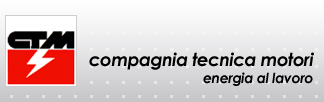

Generator Sets
The company offers industrial diesel power plants and diesel generators, as well as the whole range of measures and technological solutions to ensure guaranteed uninterrupted power supply at commercial and industrial facilities. Our proposals concern the development of new energy systems, reconstruction and modernization of existing ones.
We supply diesel-generator sets of trade marks CTM, diesel engines of Mitsubishi, MTU, Deutz, CUMMINS, Perkins, alternators of trade marks Leroy Somer, Stamforf and other leading manufacturers.
One of the areas of our activity is the development and implementation of projects in the field of providing production, resource-producing, residential and other facilities, with backup and main sources of electricity.
Optimal prices are due to direct supplies from European plants.
We offer only high-quality and reliable power stations of the worlds most famous manufacturers in this segment of the market. We offer products that have proven themselves in real-world conditions.
Our advantages:
• In our company there are a lot of specialists with extensive experience that know their business perfectly and understand diesel generators as well as the manufacturers themselves.
• Bench testing of each power plant is carried out at a load from 20% to 110% of the rated power - only proven and high-quality power stations are shipped to the consumer.
• Optimal prices for diesel-generator sets of leading manufacturers
• A wide range of diesel generators from leading European manufacturers.
• Huge selection of diesel generators, adapted to solve a variety of tasks.
• Delivery of diesel generators throughout Europe, and sometimes beyond.
• Service of diesel-generator sets purchased in our company, as well as after-sales service of diesel generators.
• Design and supply services for diesel generators for any of the industries: mining, industrial, medical, telecommunications, security and transport.
Terms of delivery of products:
The delivery time of diesel generators and other complex technical equipment depends on the options for delivery and the equipment of the ordered equipment and is coordinated with each customer individually.
Delivery terms are determined by the following factors:
availability of the requested model of the diesel generator in the warehouse, the number of additional options that should be equipped with a diesel generator version of the diesel generator (chassis, noise-proof casing, container).
Brands of manufacturers:
|  |
The diesel power plants of the Italian manufacturer CTM (Compagnia Tecnica Motori) are characterized by high performance at a compact size. Diesel power stations STM are constructed on the basis of powerful and economical engines from world manufacturers: Volvo Penta, Mitsubishi, MTU, John Deere and Perkins.
|
 |
Perkins Engines Co. Ltd. is one of the worlds leading companies specializing in the development and production of high-reliability diesel engines of the new generation. Perkins motors are well-known all over the world, are characterized by unconditional reliability and durability, thats why they find application as powerplants for the most diverse technology, including diesel power stations of leading brands. |
|
Leroy-Somer (LS) is a French company. It has two main branches: "Electric generators" produces alternators from 10 to 25 MW. "Motors and drives" produces special electric motors, motor-reducers and drives for applications: at high temperatures, high humidity, for operation with frequency converters, without independent cooling, etc. It has 27 production divisions and 470 centers of expertise and service. |
|
MTU is the largest German manufacturer of engines and complex systems for power plants. MTU Friedrichshafen GmbH for more than 30 years is part of DaimlerChrysler AG, the largest manufacturer of diesel engines in the United States. Under the MTU brand, diesel engines are produced for the oil, mining and agricultural industries. Diesel generators based on MTU engines are successfully used on construction sites, railway transport and military equipment. |
|
Cummins is the worlds largest independent manufacturer of diesel engines. Over one million units of Cummins products that have undergone environmental certification rotate the wheels of trucks, special vehicles, buses and coaches anywhere in the world. Each of these engines is the result of the unique experience of the developers, their ability to create efficient engines for any application.
|
|
The Deutz brand is the highest quality product, which accumulates the experience of several generations of engineers and technicians. The company is one of the largest manufacturers of diesel engines and supplies its units to manufacturers of automotive, agricultural machinery and marine vessels.
Deutz power units are legendary German quality and reliability, supplemented by the latest achievements in the field of world-class engine building. This allows the company to create equipment that can withstand operation under the most stringent conditions during long-term operation with extreme loads. |
|
|
Stamford. Cummins Generator Technologies has almost a century of practical experience in the field of production and development of electrical machines and equipment, modern devices and production systems, and also owns the trademark Stamford, an English company that is one of the European and world leaders among manufacturers of synchronous generators of the highest quality and reliability .
|